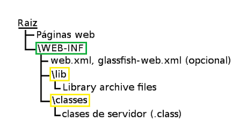

Despliegue de aplicaciones Java y JavaScript
Dos de los lenguajes más utilizados en el despliegue de aplicaciones web son Java y JavaScript, que si bien comparten un nombre similar, son lenguajes completamente diferentes, tanto en propósito como en implementación, y esto también afecta cómo se manejan a la hora de hacer un despliegue de aplicaciones.
Diferencias clave:
- Naturaleza del lenguaje:
- Java: Lenguaje compilado y orientado a objetos. Se utiliza para crear aplicaciones robustas y multiplataforma (backend, aplicaciones móviles, software de escritorio, etc.).
- JavaScript: Lenguaje interpretado y basado en eventos. Es principalmente usado en el desarrollo web (frontend y, cada vez más, en el backend con Node.js).
- Ejecución:
- Java: Necesita la Máquina Virtual de Java (JVM) para ejecutarse, lo que permite su portabilidad ("escribe una vez, ejecuta en cualquier lugar").
- JavaScript: Se ejecuta directamente en navegadores web o en entornos como Node.js.
- Casos de uso principales:
- Java: Backend de aplicaciones empresariales, sistemas Android, aplicaciones de escritorio.
- JavaScript: Interactividad en páginas web, aplicaciones frontend (React, Angular) y backend ligero con Node.js.
Diferencia en el despliegue de aplicaciones:
-
Java:
- Las aplicaciones en Java generalmente se compilan a bytecode, formato binario no específico de ningún sistema operativo que luego es ejecutado por la JVM.
- Desplegar una aplicación Java suele implicar:
- Generar un archivo .jar (Java ARchive) o .war (Web ARchive).
- Configurar un servidor de aplicaciones compatible con Java, como Tomcat.
- Garantizar que la máquina donde se despliega tenga una JVM adecuada.
-
JavaScript:
- En el caso de aplicaciones web, los archivos JavaScript (junto con HTML y CSS) se despliegan directamente en un servidor web (como Apache o Nginx) y se sirven al navegador.
- Para aplicaciones backend con Node.js, se despliega el código fuente y se ejecuta con el entorno Node.js instalado en el servidor.
- El despliegue puede implicar herramientas como Webpack (para empaquetar y optimizar archivos), y servicios como Vercel, Netlify o Docker para aplicaciones modernas.
En este tema veremos cómo desplegar aplicaciones Java sobre un servidor Tomcat y también como desplegar aplicaciones JavaScript con Node.js.
Despliegue de aplicaciones Java
En los apartados anteriores hemos visto, en términos generales, qué es un servidor de aplicaciones y un despliegue de aplicaciones web. Ahora vamos a centrarnos en un caso concreto, las aplicaciones Java.
En el lado del servidor, tenemos que conseguir que nuestro servidor HTTP sea capaz de ejecutar programas de aplicación que recojan los parámetros de peticiones del cliente, los procesen y devuelvan al servidor un documento que éste pasará a su vez al cliente.
Así, para el cliente el servidor no habrá hecho nada distinto a lo estipulado en el protocolo HTTP, pero el servidor podrá valerse de herramientas externas para procesar y servir la petición solicitada, pudiendo así no limitarse a servir páginas estáticas, sino utilizar otras aplicaciones (servlets, JSP...) para servir documentos con contenido dinámico.
Los programas de aplicación son típicamente programas que realizan consultas a bases de datos, procesan la información resultante y devuelven la salida al servidor, entre otras tareas.
Vamos a centrarnos en las aplicaciones web JavaEE, en las que los componentes dinámicos que recibirán las peticiones HTTP en el servidor serán los servlets y JSPs. Estos componentes podrán analizar esta petición y utilizar otros componentes Java para realizar las acciones necesarias (beans, EJBs, etc).
Estructura de una aplicación Java
Una aplicación web JavaEE que utilice servlets o páginas JSP debe tener una estructura de ficheros y directorios determinada:
-
En el directorio raíz de la aplicación se colocan las páginas HTML o JSP (podemos dividirlas también en directorios si queremos)
-
Colgando del directorio inicial de la aplicación, se tiene un directorio WEB-INF, que contiene la información Web relevante para la aplicación.
-
El resto de elementos de la aplicación (imágenes, etc), podemos estructurarlos como nos convenga.

Esta estructura estará contenida dentro de algún directorio, que será el directorio correspondiente a la aplicación Web, y que podremos, si lo hacemos convenientemente, copiar en el servidor que queramos. Es decir, cualquier servidor Web JavaEE soporta esta estructura en una aplicación Web, sólo tendremos que copiarla en el directorio adecuado de cada servidor.
Cada aplicación web JavaEE es un contexto, una unidad que comprende un conjunto de recursos, clases Java y su configuración. Cuando hablemos de contexto, nos estaremos refiriendo a la aplicación web en conjunto.
Empaquetamiento
Una forma de distribuir aplicaciones Web es empaquetar toda la aplicación (a partir de su directorio inicial) dentro de un fichero WAR (de forma parecida a como se hace con un TAR o un JAR), y distribuir dicho fichero. Podemos crear un fichero WAR de la misma forma que creamos un JAR, utilizando la herramienta JAR.
Estos ficheros WAR son un estándar de JavaEE, por lo que podremos utilizarlos en los diferentes servidores de aplicaciones JavaEE existentes.
Despliegue de archivos WAR
Los archivos WAR, son un tipo especial de JAR utilizado para distribuir los artefactos o contenido de las aplicaciones Web en tecnología JEE: páginas Web HTML o JSP, clases Java, servlets Java, archivos XML, librerías de etiquetas (tag libraries) y otros recursos.
El empaquetamiento en archivos WAR es algo estándar, pero no así el proceso de despliegue, que es dependiente del servidor. No obstante, la mayoría de servidores JavaEE funcionan en este aspecto de modo similar: permiten desplegar las aplicaciones desde una consola de administración y también "dejando caer" el fichero en determinado directorio.
Maven
Maven es una herramienta open-source, que se creó en 2001 con el objetivo de simplificar los procesos de build (compilar y generar ejecutables a partir del código fuente).

Antes de existir Maven, si queríamos compilar y generar ejecutables de un proyecto, teníamos que analizar qué partes de código se debían compilar, qué librerías utilizaba el código, dónde incluirlas, qué dependencias de compilación había en el proyecto…
En el mejor de los casos, se empleaban unos pocos minutos para saber cómo hacer una build del proyecto. En el peor de los casos, el proceso de build era tan complejo que un desarrollador podía tardar horas en saber cómo compilar y generar los ejecutables a partir del código.
Ahora, la build de cualquier proyecto Maven, independientemente de sus módulos, dependencias o librerías, consiste simplemente en ejecutar el comando mvn install.
Por otra parte, antes de Maven, cada vez que salía una nueva versión de un analizador estático de código, de un framework de pruebas unitarias (como JUnit) o cualquier librería, había que parar todo el desarrollo para reajustar el proceso de build a las nuevas necesidades.
Y… ¿cómo se ejecutaban las pruebas? ¿Cómo se generaban informes? Sin Maven, en cada proyecto esto se hacía de distinta manera.
Lo cierto es que Maven es mucho más que una herramienta que hace builds del código.
Podríamos decir, que Maven es una herramienta capaz de gestionar un proyecto software completo, desde la etapa en la que se comprueba que el código es correcto, hasta que se despliega la aplicación, pasando por la ejecución de pruebas y generación de informes y documentación.
Para ello, en Maven se definen tres ciclos de build del software con una serie de etapas diferenciadas. Por ejemplo el ciclo por defecto tiene las etapas de:
- Validación (validate): Validar que el proyecto es correcto.
- Compilación (compile).
- Test (test): Probar el código fuente usando un framework de pruebas unitarias.
- Empaquetar (package): Empaquetar el código compilado y transformarlo en algún formato tipo .jar o .war.
- Pruebas de integración (integration-test): Procesar y desplegar el código en algún entorno donde se puedan ejecutar las pruebas de integración.
- Verificar que el código empaquetado es válido y cumple los criterios de calidad (verify).
- Instalar el código empaquetado en el repositorio local de Maven, para usarlo como dependencia de otros proyectos (install).
- Desplegar el código a un entorno (deploy).
Para poder llevar a cabo alguna de estas fases en nuestro código, tan solo tendremos que ejecutar mvn y el nombre de la fase (la palabra que puse entre paréntesis). Además van en cadena, es decir, si empaquetamos el código (package), Maven ejecutará desde la fase de validación (validate) a empaquetación (package). Así de simple.
Por otra parte, con Maven la gestión de dependencias entre módulos y distintas versiones de librerías se hace muy sencilla. En este caso, solo tenemos que indicar los módulos que componen el proyecto, o qué librerías utiliza el software que estamos desarrollando en un fichero de configuración de Maven del proyecto llamado POM (Project Object Module).
Además, en el caso de las librerías, no tienes ni tan siquiera que descargarlas a mano. Maven posee un repositorio remoto (Maven central) donde se encuentran la mayoría de librerías que se utilizan en los desarrollos de software, y que la propia herramienta se descarga cuando sea necesario.
Digamos que Maven aporta una semántica común al proceso de build y desarrollo del software.
Incluso, establece una estructura común de directorios para todos los proyectos. Por ejemplo
- el código estará en
${raíz del proyecto}/src/main/java, - los recursos en
${raíz del proyecto }/src/main/resources. - Los tests están en
${raíz del proyecto }/src/test.
Probablemente todo esto no quede claro todavía. Tras leer la parte teórica, te recomiendo que realices la "Práctica 3 - Despliegue en Tomcat con Maven". Y después vuelvas a leer la teoría. Seguro que así te queda más claro el proceso.